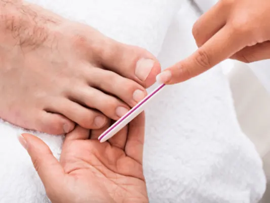

Gids
Pedicure in Nijmegen
Je voeten dragen je de hele dag. Een pedicure helpt bij eelt, ingegroeide nagels en een droge huid, en is voor mensen met diabetes zelfs onmisbaar.
Op deze pagina lees je welke behandelingen er zijn, wanneer je naar een medisch pedicure gaat en hoe je je voeten thuis verzorgt.
Behandelingen bij een pedicure
Van een luxe verwenbehandeling tot het oplossen van voetproblemen.

Een verwenmoment voor je voeten: Luxe pedicurebehandelingen in Nijmegen
Toe aan een verwenmoment voor je voeten, of heb je last van eelt, een likdoorn of een ingegroeide nagel? Een goede pedicure helpt in beide gevallen. In…

Stap in de wereld van voetverwennerij
Welkom in de fascinerende wereld van pedicurebehandelingen! In Nijmegen kun je genieten van een breed scala aan plekken waar jij en je voeten kunnen…
Medische pedicure
Bij diabetes of reuma is goede voetzorg extra belangrijk. Een medisch pedicure is daarin gespecialiseerd.
Voeten verzorgen thuis
Met een vaste routine houd je je voeten zacht en gezond.
Andere gidsen: verzorging
Veelgestelde vragen
Hoe vaak ga je naar de pedicure?
Voor gewone voetverzorging is eens per zes tot acht weken gebruikelijk. Bij voetproblemen of diabetes adviseert de pedicure vaak vaker.
Wordt een medisch pedicure vergoed?
Voor mensen met diabetes wordt voetzorg in veel gevallen vergoed via de basisverzekering, afhankelijk van het zorgprofiel. Vraag het na bij je huisarts of zorgverzekeraar.